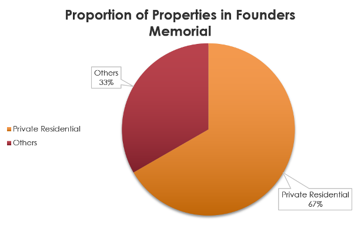

analysis
Analysis Methods and Recommendations
For our analysis, our group will be analysing both the target audience served and the efficiency of each TEL stage 4 individually.
To analyse the target audience served, our group analyzed the type of buildings and residents living within each walkable iso-area created. We then gathered information about the cost of construction and population's utilization of within each MRT Station to determine whether the cost of development outweighs its benefits to taxpayers and if there is sufficient utilization of MRT services to justify the construction of the MRT Station. We have also taken into consideration future developments that will take place within each area before arriving at our decision.
To measure the efficiency, our group has come up with a calculation to measure the efficiency, which we have dubbed the walkability probability. To do this, we first find the ratio of buildings in each iso-area band compared to the total number of buildings in the iso-area. To simplify the process, we assumed that the closest point to the MRT station would be considered. For instance, if building A spans both the 200 – 400m band and the 400 – 600m band, we would assume that it was part of the 200 – 400m band.
Next, our group took reference from Olszewski and Wibowo (2005) to determine the penalisation score for each band. The penalisation score is used to calculate the expected likelihood of a person walking to the MRT station. As Figure 1 shows, men and women have different probabilities of walking to the MRT. Hence, our group has taken the approximate average of the two probabilities and applied it as the penalisation score.
Olszewski, P., & Wibowo, S. S. (2005). Using equivalent walking distance to assess pedestrian accessibility to transit stations in Singapore. Transportation Research Record: Journal of the Transportation Research Board, 1927(1), 38–45. https://doi.org/10.1177/0361198105192700105
| Iso-area band range | Penalty |
|---|---|
| 0-200m | 0.9 |
| 200-400m | 0.8 |
| 400-600m | 0.6 |
| 600-800m | 0.4 |
The expected likelihood of people walking would be derived through this formula:
No of buildings in Iso-area band _____________________________________ x Penalty
Total number of buildings in iso-area
After which, the expected likelihood of people walking would be added across all bands and from there, the total walkability probability would be derived.We will consider an MRT station to be efficient if it has a walkability probability of over 50%. Afterwards, we will consider any possible outside factors which could reduce the effectiveness of the MRT station.Using this calculation, our group will not only be able to calculate the expected efficiency of each MRT station according to the probability that someone will walk to the station, or the walkability probability, but we will also be able to analyse the proportion of buildings in each band and identify the band with the highest walkability probability.
Iso-area vs Buffer
Before we discuss our findings, the group would like to explain our choice to use iso-area to depict the catchment area of TEL stage 4 stations instead of buffer.
A buffer area is the most common way to delineate a catchment area. It measures a Euclidean distance away from the point given. However, this convenience comes with some issue. Using Euclidean distances which is essentially a straight line can be quite misleading and impractical.
A more credible and realistic approach to delineate the catchment area would be to use network distance i.e., the shortest distance approach. The method that provides this approach is Iso-Areas as Polygons (from Layer). The iso areas are mapped onto the walkable paths by Singaporeans hence it is more accurate. In all, a buffer is not used because in reality, a person cannot always travel in a straight line towards their destination but will have to turn at bends and curves depending on their walking paths.
TE22A: Founder's Memorial
Background
Located between Tanjong Rhu and Gardens by the Bay stations along the TEL, Founders Memorial MRT station was meant to improve accessibility for visitors to the Bay East Garden, where the memorial will be located. The station is built to serve expected upcoming residential and recreational developments in the area and showcase the contributions of modern Singapore’s founders.
The China Railway First Group Co, Ltd was awarded the contract of S$242.4 million in June 2016 for the conversion of the existing TEL facility building at Bay East Garden to build the Founders’ Memorial Station, where construction begins in 2019.
With future development plan to be completed in 2025, the memorial site will be housed in a garden, within which an indoor gallery will be built. There will likely be permanent and temporary galleries, as well as a visitor center and multi-purpose rooms which could host school excursions and citizenship ceremonies.
Target Audience
The expected target audience of the Founder's Memorial is likely to be visitors, school students, small group of private residences and for ceremonies purposes. As clear plans for development of the area have not yet been planned, it is remains unclear the exact future target audience, such as residential buildings or commercial buildings.

Nonetheless, at the current moment there are some private residences which fall within the iso-area created. 67% of all buildings which fall within the iso-area are private residential buildings. With reference to Google Street View, we can see that these buildings are condominiums within Tanjong Rhu, which lies across East Coast Parkway.

Efficiency
Based on current developments in the area, we have calculated the following:
From the calculations, we can see that at the current state of development at Founders' Memorial, the station has a poor walkability probability of 43.33%, which is the lowest out of all stations analysed and below the threshold set by our group. Furthermore, the greatest